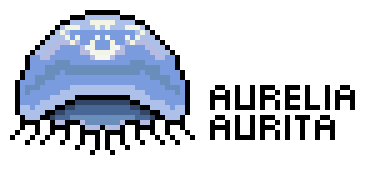

A big interest of mine away from research is art, and I have recently dabbled in SciArt, hoping to bridge the gap between art and science. Despite my limited skills, I find creating small pieces of artwork to be extremely satisfying and a nice change of pace from the normal academic (well, PhD) life.
I believe the link between science and art is extremely important. I think having an appreciation of artistic concepts improves figures in acadmeic pieces of work. Illustrations are also a great way of dissemminating information to non-specialists (and specialists) in a way that is both accessible and (hopefully) memorable. As the adage goes, a picture paints a thousand words.
8-bit
I love the simplicity of 8-bit style drawings, they are a bit of fun, but I think their simplicity makes them suitable for poster and oral presentations too. Here are a few examples.

Because field work is just real life Pokemon isn’t it?



Comic style art
Comic style piecies hopefully show that not all scientists take themselves (or their research) too seriously.